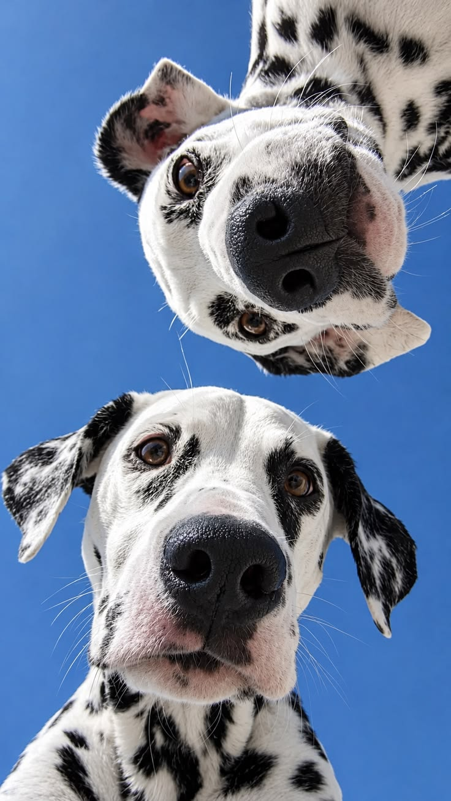
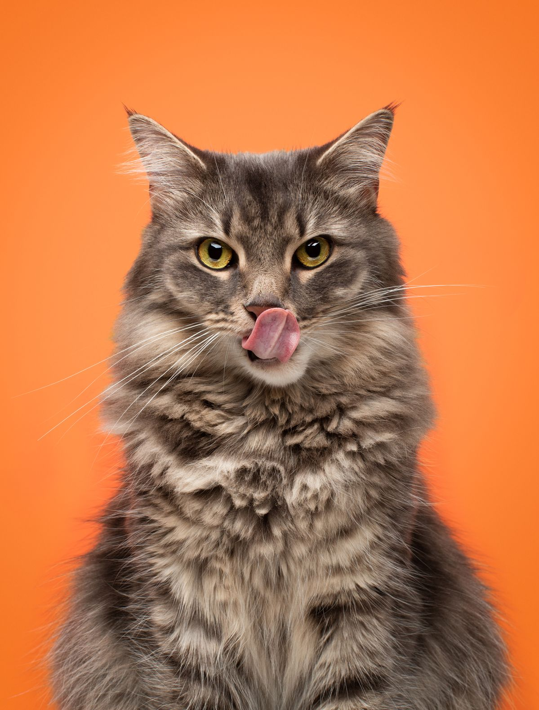

I'm a student
Interested in flexible pet-care work that fits around university? Explore the opportunities we're planning.

Flexible pet-care opportunities for university students. Convenient, local care for pet owners in Fulham and Parsons Green.
Two ways to join the UniTails community — choose yours below.
Pre-launch: Join the interest list. Bookings and carer verification are not yet available.

Interested in flexible pet-care work that fits around university? Explore the opportunities we're planning.
Looking for local dog walking, pet sitting or home visits? Discover the service we're developing.
Pre-launch only: interest forms are demonstrations and do not currently save submissions.
Paid, flexible opportunities designed around lectures, exams and deadlines. Students choose their availability, services and rates.
Planned dog walking, pet sitting and home visits for owners looking for a suitable local carer.
Connecting students and neighbours, starting in Fulham and Parsons Green before potential expansion.
Looking for part-time work that fits your studies? Register your interest in future local pet-care opportunities.
Discover a future service designed to help you find pet care that fits your routine.
From daily dog walks to thoughtful home visits, discover flexible pet-care services designed around your pet’s needs.

Local walks and companionship, planned around the dog's routine.

Care for cats, rabbits and other animals, subject to carer suitability.

Feeding, check-ins and routine support for pets in their familiar environment.
Being a university student does not automatically qualify someone to care for animals. Before enabling bookings, UniTails intends to establish appropriate screening, operating procedures and safeguards.
These are planned measures, not completed checks. UniTails has not yet approved or verified any carers through this website.
The proposed marketplace is for university students aged 18 or over. Eligibility and checks will be defined before onboarding opens.
Yes, flexible availability around studies is a central planned feature of UniTails.
No. UniTails is currently a pre-launch concept. You can preview the interest forms, but bookings are not active.
The initial proposed service area is Fulham and Parsons Green in Southwest London.
Whether you want flexible part-time work or future help caring for your pet, explore the appropriate interest form.